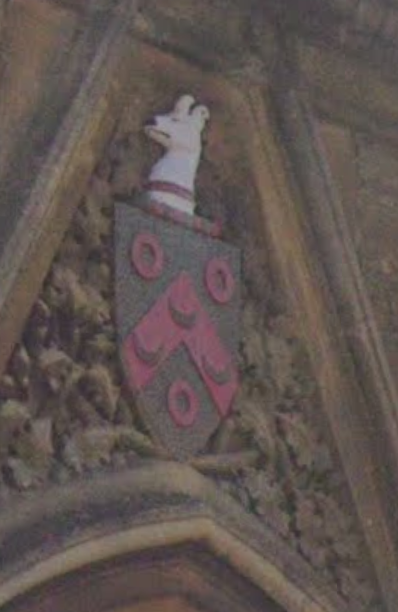
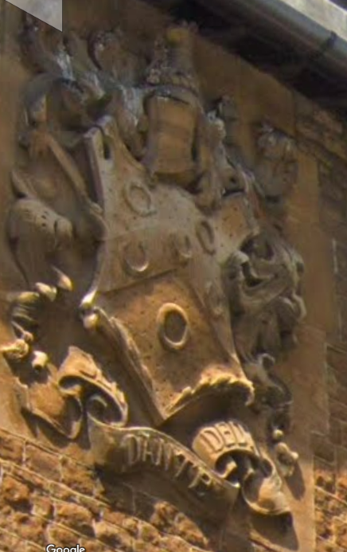

Para encontrar la próxima roca, nos vamos a trasladar al otro lado del mundo... Podés deducir a qué país corresponde la imagen?
Al fin llegó el día de tu raid de descubrimiento, pero llegó en tiempos extraños, así que se va a tratar de nuestros primeros Raids digitales. Esperamos que te guste. Te vamos a pedir que le busques un lugar tranquilo, donde puedas estar solo/a ya que todo el trayecto lo vas a realizar en soledad. Tambien necesitamos que te concentres y le dediques el tiempo necesario. Además, tené a mano elementos para escribir.
Cuál es tu nombre?
, hoy vas a transitar una senda... para llegar al destino, vas a tener que encontrar 5 rocas escondidas en distintas partes del mundo. A medida que las vayas obteniendo, guardate capturas de ellas.
Para encontrar la primera Piedra, vas a visitar el patio del Colegio Charterhouse en Londres.
Es un colegio bastante especial, sabes por qué?
Bien, lo que tenés que hacer para conseguir la primera piedra es encontrar cuántas lunas hay en total en los escudos de armas que se encuentran en el colegio?
Observá todos los detalles, acordate que podés poner pantalla completa
Felicitaciones! encontraste la primera roca!
No, esa no es la respuesta, observá bien!.
Una pista adicional: en las paredes hay más de un escudo...
No, esa no es la respuesta, observá bien!.
Una pista más, mirá los escudos
 
Para encontrar la próxima roca, nos vamos a trasladar al otro lado del mundo... Podés deducir a qué país corresponde la imagen?
Muy bien, para sacar la segunda roca de la India, tenés que resolver el laberinto. Pero no de cualquier manera... Tenés que recorrerlo de manera de llegar a la salida pasando por el menor número posible. Es decir, si en tu recorrido pasaste por los numeros 5-4-1-3-3-2 , tu número final va a ser el 541.332. ¿CUAL SERÍA EL MENOR NUMERO POR EL CUAL PODÉS SALIR DEL LABERINTO?

No, le erraste! Te vamos a dar otra pista...
Esta imagen también corresponde al mismo país.
Encontraste la segunda Roca... andá recordando los lugares por los que pasaste
Noooo , le erraste!
Una pista... es un número de 4 cifras y empieza con 1
Ok, vamos a cambiar de continente... en qué país estarías si estuvieras a mitad de camino entre Keetmanshoop y Maseru?
Acá tenes la tercera Roca. No te olvides de guardarlas!
Seguimos viajando... En este caso a una Isla muy especial.
Así que vamos a volver a trasladarnos virtualmente.
Primero que nada, tenés que encontrar cuántas banderas hay izadas en el mastil.
Para eso, tenes que dirigirte por el camino hacia el OESTE
Bien!!! Acabas de conseguir la cuarta Roca, ya falta poco!
No, , esa no es la respuesta correcta
Vamos con una pregunta más fácil: La isla a la que viajaste, es la Isla de Brownsea,
donde BP organizó lo que fue considerado el PRIMER CAMPAMENTO SCOUT. En ese campamento,
hubo 4 patrullas: Toros, Lobos, Cuervos y cuál mas?
Muy Bien, . Como ya te habrás dado cuenta,
recorrimos el Colegio de Charterhouse,
la India, Sudáfrica y la Isla de Brownsea.
Todos estos lugares fueron significativos
dentro de la vida de BP.
Para encontrar la última Piedra, vamos a trasladarnos
al lugar que él consideró su último hogar, en Nyeri, Kenia.
Cómo se llamó su último hogar? La respuesta la vas a encontrar
si prestas atención a este video.

Excelente, Con esto, obtuviste la quinta y última piedra. A continuación, comienza tu Raid de Descubrimiento
Llegaste a tu lugar de acampe, ahora llega el tiempo de la reflexión...
Teobaldo es un reconocido profesor de filosofía en la Universidad Nacional. Un día, delante de sus alumnos, sin decir palabras, saco de debajo de su escritorio un frasco grande de boca ancha. Lo colocó sobre la mesa, junto a una bandeja con piedras del tamaño de un puño y preguntó:
- ¿Cuántas piedras piensan que caben en el frasco?
Después de que los asistentes hicieron sus conjeturas, comenzaron a meter piedras hasta que llenó el frasco. Luego preguntó:
-¿Está lleno?
Todo el mundo lo miró y asintió. Entonces, sacó de debajo de la mesa un recipiente con piedras más pequeñas. Metió parte de ellos en el frasco y lo agitó. Las piedritas entraron por los espacios que dejaban las piedras grandes. El filósofo sonrió con ironía y repitió:
- ¿ Está lleno?
Esta vez, los oyentes dudaron:
- Tal vez, no.
- ¡Bien!
En ese momento, tomó una caja arena y comenzó a volcarla en el frasco. La arena se filtraba entre los pequeños espacios que dejaban las piedras y las piedras pequeñas, hasta colmar el envase.
- ¿Está lleno? preguntó nuevamente.
¡Si! – respondieron unánimemente los estudiantes.
Entonces Teobaldo, frente a la mirada sorprendida de sus alumnos, tomo una jarra de agua y vertió su contenido dentro del frasco que, efectivamente, quedó lleno.
En esta ocasión, los estudiantes, sonrieron. Cuando la risa se apagaba, el profesor preguntó:
-¿Qué hemos demostrado?
Un alumno respondió:
-Que no importa lo llena que esté tu agenda, si lo intentas, siempre puedes hacer que quepan más cosas.
¡No…!- concluyó el filósofo-.Este frasco representa la vida. Lo que esta lección nos enseña es que hay que colocar las piedras grandes e importantes primero, el resto encontrará su lugar...
¿Cuáles son las piedras grandes en nuestra vida?
Son las cosas verdaderamente importantes aquellas que, si todo lo demás se perdiera y sólo éstas quedaran, nuestra vida aún estaría llena, aún tendría sentido. Prestemos atención a las cosas que son cruciales; establezcamos nuestras prioridades, lo demás se acomodará solo.
Si gastamos todo nuestro tiempo y energía en cosas que no nos llenan, nunca tendremos lugar para las cosas realmente importantes.
En esta historia, todo se acomoda naturalmente. En la vida no siempre podemos o queremos elegir con criterios tan claros. Acomodar, ajustar, modificar, volver a sacar, reubicar... ¿no serán procedimientos necesarios en este rompecabezas que es vivir?
Cada una de las partes tiene su lugar en un momento determinado y forma parte de una circunstancia concreta. Nunca nuestro frasco estará totalmente lleno, siempre habrá ocasión para desechar y volver a construir, de hacer lugar para algo o alguien más, ésta es parte, nuestra tarea de ser humanos.
1) ¿Qué representan, en el frasco de la vida, las piedras, las piedras pequeñas, la arena y el agua? Realizar una lista propia.
2) ¿Qué parte ocupa en nuestra vida cada material de esa lista?
3) ¿Qué criterios o valores tomamos para darle a cada cosa su lugar? ¿Importancia, utilidad, urgencia, tiempo? ¿Puede haber otros criterios?
4) ¿Qué quisiéramos que ocupe preferentemente todo nuestro frasco-vida? ¿Qué haríamos para lograrlo?
5) En este momento de nuestras vidas. ¿Es preciso reubicar o quitar algo, para dar lugar a lo verdaderamente importante? ¿Cómo lo haríamos?